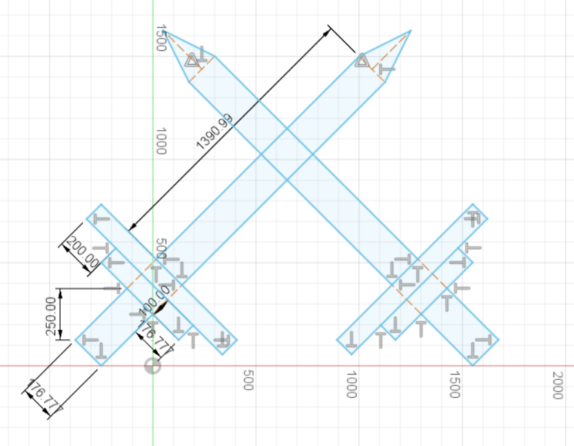

Week 7: CNC Milling Molding & Casting
Week 7 was pretty confusing at first
The objective was to learn how to use a CNC mill and try out molding and casting
First things first, you gotta make a design
For me, a design I thought would be cool were swords, so start off by making one:
Measurements are included in the picture, but once you have one sword, guess what? You can copy paste the next one and move it into place
But you know its boring if you just have the same design on both sides, so I recommend seeing if you can give each sword some uniqueness
For me, the way to do that was to alter the handles
As you can see, each of the swords has a unique handle giving a feeling of each being different
Next, lets just extrude the swords a bit, doesnt have to be too much, maybe 1 or 2 cm for me
Now, its time to get to work

First things first you gotta get some wax to put in the shopbot
The shopbot will then cut the design you created into the wax

This is what my wax cut ended up looking like
Next thing you gotta do is make your solution with one half part A solution and the other half part B

This solution will eventually become a solid instead of a liquid and have a consistency similar to plastic? puddy? I dont know.
Only problem? I used the wrong kind of solution, and mixed clear part A with non-clear part B (make sure you dont do that)

The result was that I had to clean out the solution from my wax mold so that I could try again, im sure you can see how happy I was about that

After picking at the wax with a knife and cleaning it the best I could this was the result, and it was time to make another solution
I made the solution again, poured it in and waited a day aaaand:

It honestly came out better than I thought considering my previoius mistake
But, this is only my mold, I havent cast anything yet, and I thought what better material to cast swords out of other than Bismuth?
So, I heated up a pot of bismuth!

As soon as that was done I scooped it up, and poured it into my mold

When that is done hardening you should get this:

Additionally, if you like you can carefully take a chisel and a hammer and see about taking away any excess
I strongly recommend not doing this if you're like me and have really shaky hands because I uhhh....

I cracked it. I cracked the sword not only once, not twice, but three whole times.
That aside, this week was a lot of fun, and I hope I can work with molds again in the future!